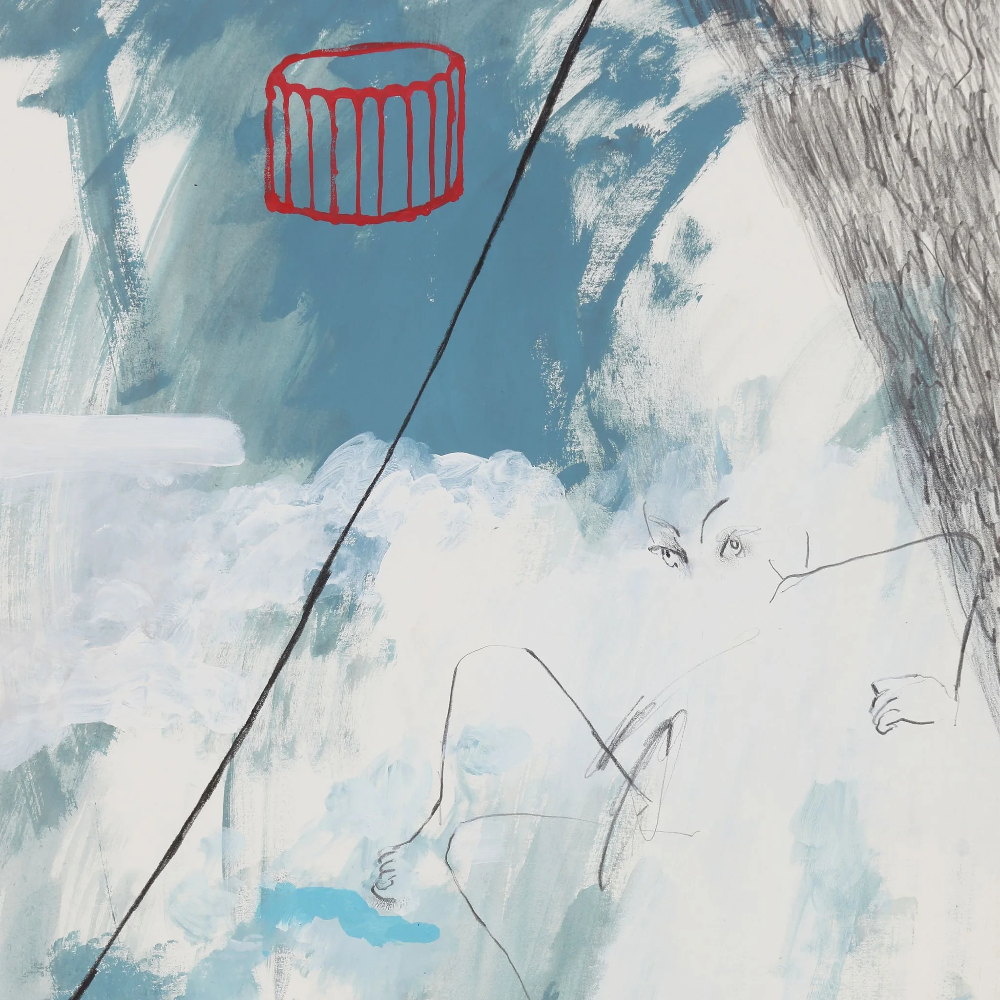

QRIAN
Debut EP — written, composed, produced and mixed by QRIAN
Debut EP [QRIAN] released on 15th October 2019
All Tracks Written, Composed, Performed, Produced (5th Track Co-Produced) and Co-Mixed by QRIAN
Related Press
Related Live
- 'An-Nyung-Ha-Sae-Yo' Performed at Ilmin Museum of Art ↗
- Archived EP Full Tracks Live Performance, Available on YouTube source ↗ source ↗